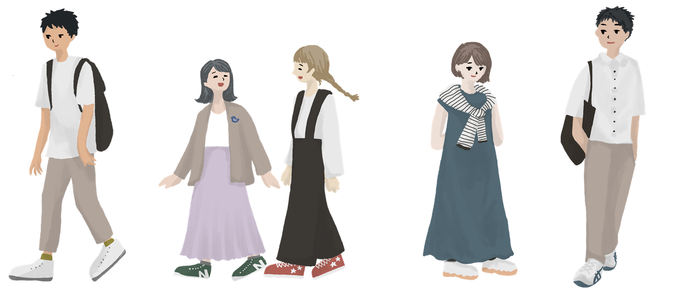

青嶺大学は、文系・理系5学部を擁する総合大学です
「学びを深める」「挑戦する」「世界とつながる」を教育の柱とし、一人ひとりの関心や将来の目標に寄り添った学びの環境を整えています。
少人数ゼミや実習、留学、地域連携プロジェクトなど、教室の外にも学びの機会を広げ、自ら考え行動できる人材を育てます。
大学選びは、未来を選ぶ第一歩。このサイトでは、志望校選びや受験準備に役立つ情報を分かりやすくお届けします。
LEARN
学びを
深める
深める
CHALLENGE
挑戦
する
する
CONNECT
世界と
つながる
つながる
FACULTIES
学部・学科{{ cur.en }}
{{ cur.jp }}
{{ cur.no }}
FACULTY
{{ cur.enShort }}
▶{{ cur.catch }}
PREPARE
受験対策
入試には複数の選抜方式があり、求められる準備も異なります。カードを選ぶと、それぞれの特徴と対策のポイントを確認できます。
STUDY PLAN
合格までの学習スケジュール例
{{ s.en }}{{ s.term }}
{{ s.t }}{{ s.d }}
ADMISSIONS
入試情報・学生サポート※本ページの日程・金額・要件はすべてサンプルです。正式な情報は必ず最新の募集要項でご確認ください。
SCHEDULE入試日程（サンプル）
← 表は横にスクロールできます →
選抜区分
出願期間
試験日
合格発表
{{ r.k }}
{{ r.a }}
{{ r.b }}
{{ r.c }}
CAMPUS
{{ l.en }}
{{ l.t }}
{{ l.d }}

LIFE